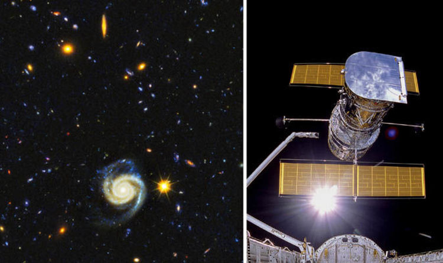

National Aeronautics and Space Administration

The National Aeronautics and Space Administration is an independent agency of the United States Federal Government responsible for the civilian space program, as well as aeronautics and aerospace research.
President Dwight D. Eisenhower established NASA in 1958 with a distinctly civilian, rather than military, orientation encouraging peaceful applications in space science. The National Aeronautics and Space Act was passed on July 29, 1958, disestablishing NASA's predecessor, the National Advisory Committee for Aeronautics (NACA). The new agency became operational on October 1, 1958. Since its establishment, most US space exploration efforts have been led by NASA, including the Apollo Moon landing missions, the Skylab space station, and later the Space Shuttle. NASA is supporting the International Space Station and is overseeing the development of the Orion Multi-Purpose Crew Vehicle, the Space Launch System and Commercial Crew vehicles. The agency is also responsible for the Launch Services Program which provides oversight of launch operations and countdown management for unmanned NASA launches.
{kind=link}
NASA science is focused on better understanding Earth through the Earth Observing System; advancing heliophysics through the efforts of the Science Mission Directorate's Heliophysics Research Program;[12] exploring bodies throughout the Solar System with advanced robotic spacecraft missions such as New Horizons; and researching astrophysics topics, such as the Big Bang, through the Great Observatories and associated programs.